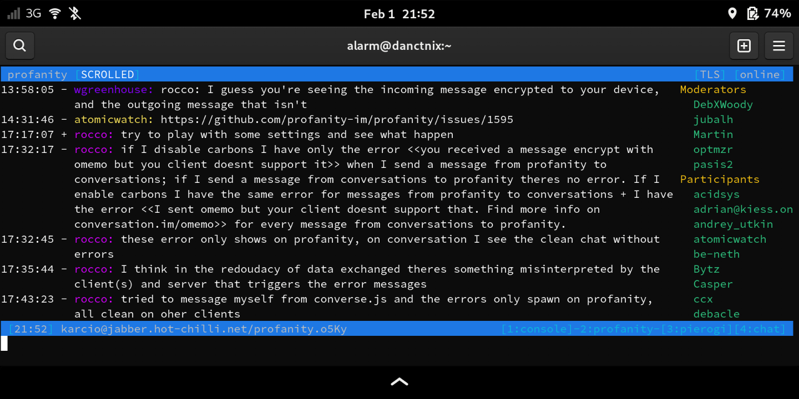

Profanity on Pinephone
karcioHi all,
So far, in my pinephone I used mainly GUI applications, because I was using a touch screen. Terminal applications are not user-friendly when it comes to one-handed operation.
I tested different distributions on my pinephone (mobian, manjaro, archarm), but usually most based on Phosh. In my opinion it is currently the best mobile graphics environment and stable as well.
In Phosh I tested few xmpp clients: - the default application installed with Phosh is chatty, a combine that supports sms / mms / xmpp (OMEMO) - Dino from repo: handy - Gajim
I know there are KDE plasma applications as well, but during my testing, plasma was unusable and I even gave up installing it. My pinephone comes with preinstalled Plasma factory image but I could not even upgrade to latest Plasma version, So I gave up KDE :(
In my opinion, Dino works the best on PinePhone with Phosh.
Recently I ordered keyboard dedicated to pinephone(pro), so I decided that I will also test terminal xmpp client.
I also decided to check profanity as I use it on my home server and it works perfectly, but I was curious how it would handle on pinephone. I installed it and everything worked well. Just one thing: pinephone terminal is small to read more than 2 lines. I wanted to scroll window Up to be able see previous content. Well, first I changed the resolution in Phosh from 200% to 150%, and I could see more than two lines.
But, I still had a trouble scrolling the main window in profanity
I looked at profanity keybindings and in the User Interface Navigation section I found that I should use PageUp/PageDown keys, but looking at Pinephone wiki this keyboard does not have PageUp/PageDown keys.
I had to do key mapping in profanity. Using following url profanity keybindings quickly I found solution.
Basicaly, I created a file ~/.config/profanity/inputrc with content
$ if profanity
"\ C-p": prof_win_prev
"\ C-n": prof_win_next
"\ C-j": prof_win_pageup
"\ C-k": prof_win_pagedown
"\ C-h": prof_subwin_pageup
"\ C-l": prof_subwin_pagedown
"\ C-y": prof_win_clear
$ endif
After starting profanity, I was able to scroll window with content using following shortcuts
- C-j - scroll up
- C-k - to scroll down
Here you can see some photos.
